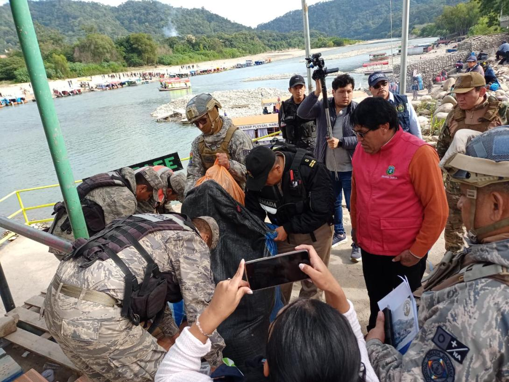
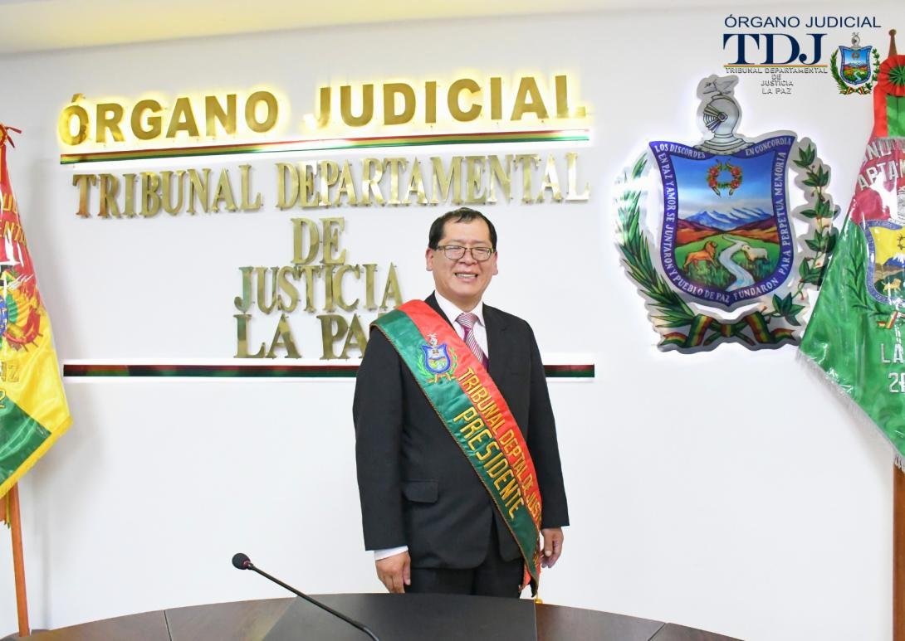

NOTICIAS EL DEBER
Infanticidio en El Alto: Padres son enviados a la cárcel y una melliza lucha por su vida
Fedjuve Tarija detecta pasos ilegales para el contrabando a la inversa
Presidente del TDJ La Paz renuncia en medio de acusaciones por caso audio
Infanticidio en El Alto: Padres son enviados a la cárcel y una melliza lucha por su vida
La muerte de un bebé de casi un año, presuntamente a causa de maltratos sufridos por
parte de sus propios padres, ha estremecido a la población de El Alto y a todo el país.
El pequeño, uno de dos mellizos, falleció la tarde del sábado 14 de junio luego de varios
días en terapia intensiva. Su hermana, también víctima de aparente negligencia, permanece hospitalizada
bajo custodia de la Defensoría de la Niñez.
Ambos padres fueron aprehendidos y enviados con detención preventiva por tres meses a distintas cárceles
en La Paz, mientras se desarrolla la investigación penal en su contra por el delito de infanticidio. Según informaron las autoridades,
el bebé ingresó al hospital con llagas, desnutrición severa, falla multiorgánica y pérdida de visión en un ojo.
Su hermana fue encontrada en condiciones similares tras la intervención de la Defensoría de la Niñez y Adolescencia.
Fedjuve Tarija detecta pasos ilegales para el contrabando a la inversa

El presidente de la Fedjuve, Celestino Barro, afirmó que la ilícita actividad se concentra por las vías La Mamora - Los Toldos y Huayllajara - Villazón.
En ambas rutas no existe control militar ni de la Aduana y Senasag que permiten a los contrabandistas sacar la carne vacuna, pollo,
huevos y otros productos alimenticios hacia Argentina.
En 2024 el sector empresarial de Tarija y un informe militar habían alertado que esas dos vías eran utilizadas para el contrabando.
Sin embargo, no hubo una respuesta de las entidades gubernamentales para reforzar los controles.
Agregó que en los próximos días se enviará una carta a esa cartera gubernamental luego de una reciente visita que realizó a la ciudad de Bermejo (Tarija).
"Allí hemos constatado que salen más ropa (textiles), inodoros, cerámicos y electrodomésticos, pero carne vacuna
y productos alimenticios no están pasando. Entonces hay denuncias que se internan por otras vías", declaró Barro.
Presidente del TDJ La Paz renuncia en medio de acusaciones por caso audio

El presidente del Tribunal Departamental de Justicia de La Paz, Yvan Córdova Castillo, presentó su renuncia irrevocable a su cargo,
en medio de acusaciones que lo vinculan al caso de supuesto consorcio de jueces que pretendía alterar la composición del Órgano
Judicial y en el que también está investigado el exministro de Justicia, César Siles.
"Ante el mundo litigante que me conoce, comprometo demostrar mi absoluta inocencia, por ello, debido a que se me atribuyen actos ejecutados desde
la Presidencia del Tribunal Departamental de Justicia de La Paz, presento mi renuncia irrevocable al cargo del presidente ", se lee en la carta.
El funcionario aseguró que no tiene relación con la investigación que está en curso y, por la cual, ya se detuvo a un juez y a una vocal. Incluso,
el fin de semana, el ministro de Justicia renunció a la cartera de Estado antes de que se conocieran unos audios en los que, supuestamente,
gesta la trama judicial para entorpecer el funcionamiento del TSJ.
Asimismo, señaló que en los últimos días su salud se ha visto deteriorada. Por reportes de prensa se conoce que él fue internado en un centro médico.